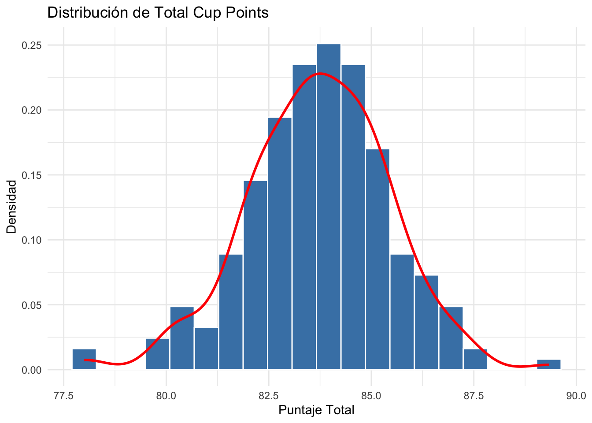
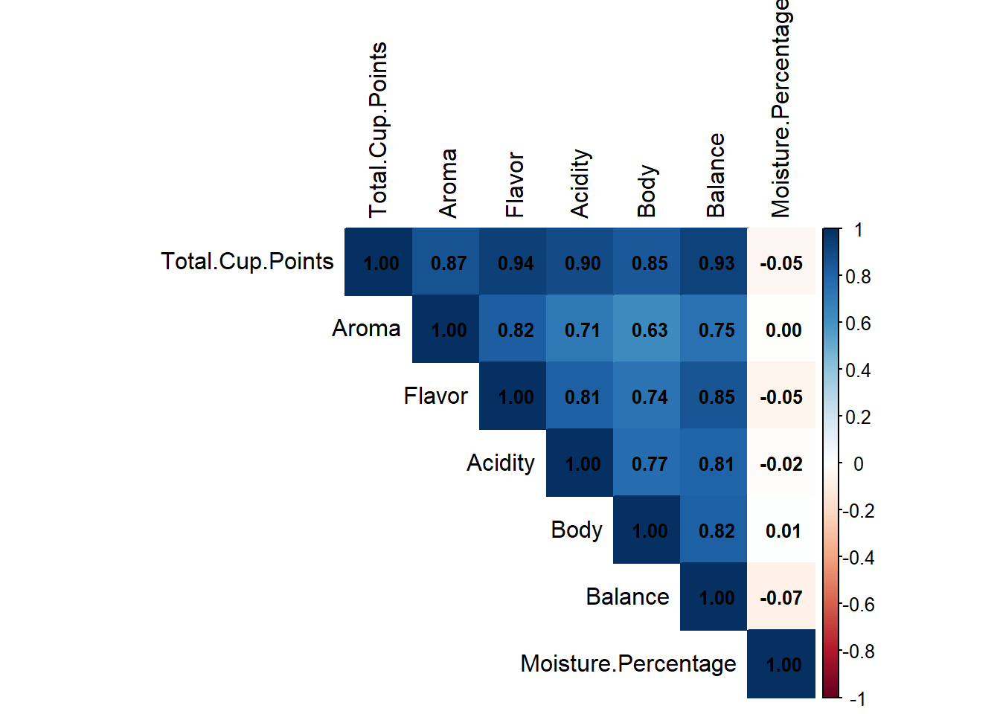
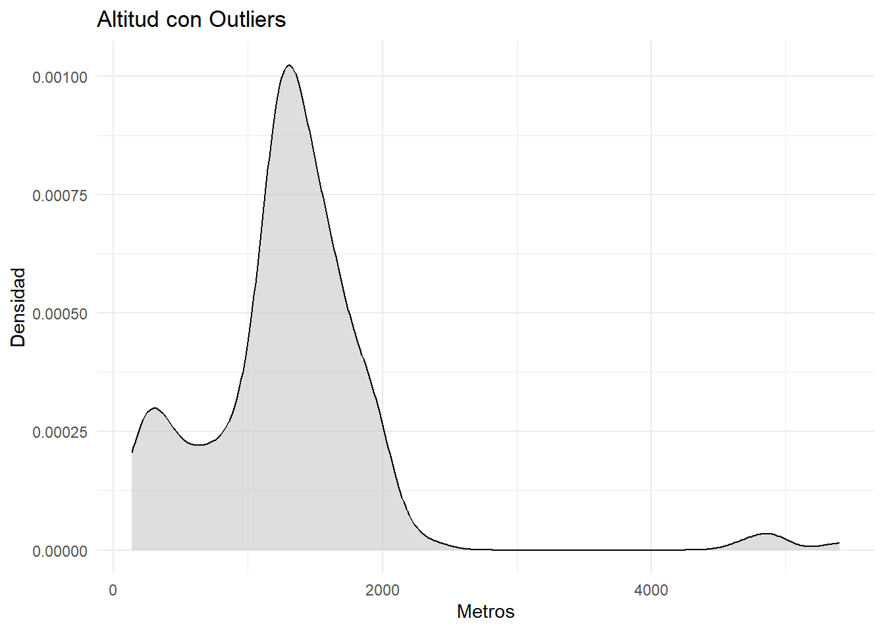
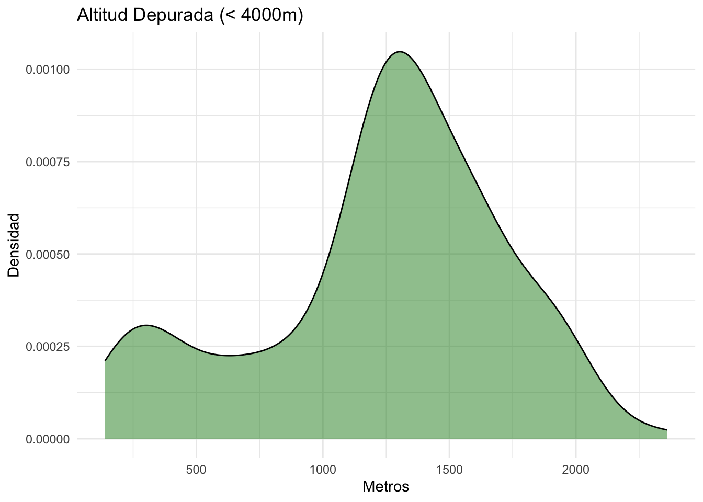
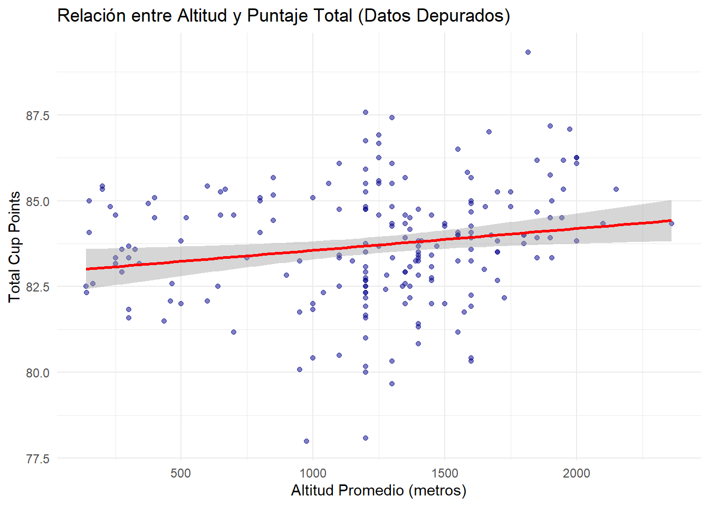
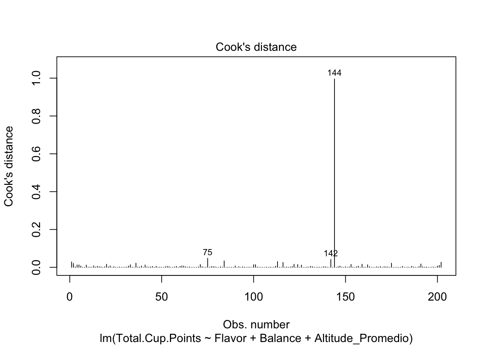
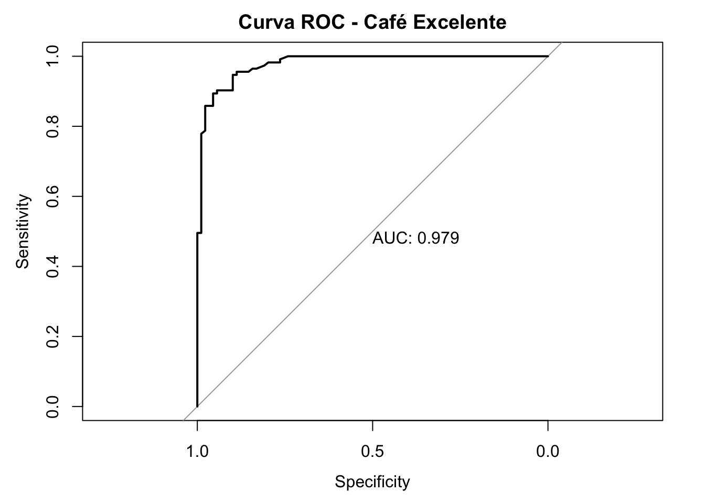
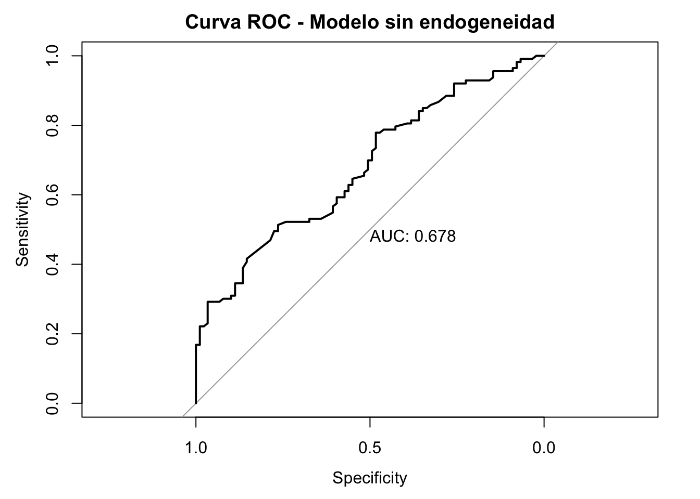

Análisis de Calidad del Café y Modelos Predictivos
Trabajo Práctico Final de Taller de Pre-procesamiento de Datos Estructurados
Author
Juan Martín Leoni / Facundo Rubiolo
Published
June 30, 2026
Introducción
El presente trabajo tiene como objetivo analizar un conjunto de datos sobre la evaluación internacional de la calidad del café (arábica). A través de técnicas de pre-procesamiento, análisis exploratorio y modelado estadístico (Regresión Lineal Múltiple y Regresión Logística), buscaremos identificar qué variables sensoriales y físicas determinan el puntaje final de una taza de café y qué factores permiten predecir si un café alcanzará el grado de “Excelencia”.
Fuente de Datos
Los datos son reales, provienen del Coffee Quality Institute (CQI), recopilados a través de la base pública del proyecto del que sale el dataset de Kaggle “Coffee Quality Data (CQI)”. Son evaluaciones de cata profesional (protocolo SCA) de cafés arábica de distintos países. Cada café fue puntuado por catadores certificados (Q-graders).
1. Pre-procesamiento y Limpieza de Datos
Para garantizar la calidad de los modelos, primero procedemos a limpiar los registros, normalizar las fechas, corregir errores tipográficos en variables categóricas y calcular rangos numéricos.
Code
# Carga de librerías necesariaslibrary(MASS)library(tidyverse)library(lubridate)library(ggplot2)library(corrplot)library(caret)library(knitr)library(lmtest)library(nortest)library(pROC)# Carga del dataset originalICO <-read.csv("data/df_arabica_clean.csv")# Proceso de NormalizaciónICO_norm <- ICO %>%# Se eliminan columnas con exceso de vacíos o repetidasselect(-ICO.Number, -X) %>%# Transformaciones de formato y limpieza de textomutate(Bag.Weight.Num.kg =parse_number(Bag.Weight),Grading_Date_Clean =mdy(Grading.Date),Harvest_Year_Clean =as.numeric(str_extract(Harvest.Year, "\\d{4}$")) ) %>%# Limpieza de la variable Color (Agrupación de categorías similares y minúsculas)mutate(Color_Clean =tolower(Color),Color_Clean =case_when( Color_Clean %in%c("blue-green", "bluish-green") ~"bluish-green", Color_Clean %in%c("brownish", "brownish-green") ~"brownish-green", Color_Clean %in%c("green", "greenish", "yellow-green", "yellowish", "yellow green") ~"green", Color_Clean =="pale yellow"~"pale yellow",TRUE~"other" ),Color_Clean =as.factor(Color_Clean) ) %>%# Creación de Altitud Promedio a partir de rangos de textomutate(Alt_Min =as.numeric(str_extract(Altitude, "^\\d+")),Alt_Max =as.numeric(str_extract(Altitude, "(?<=-)\\d+")),Altitude_Promedio =ifelse(is.na(Alt_Max), Alt_Min, (Alt_Min + Alt_Max) /2) ) %>%select(-Alt_Min, -Alt_Max) %>%# Agrupación de Métodos de Procesamiento para evitar alta varianza en modelosmutate(Metodo_Limpio =as.character(Processing.Method),Metodo_Limpio =case_when( Metodo_Limpio %in%c("SEMI-LAVADO", "Semi Washed", "Semi-washed", "Semi-washed / Semi-pulped") ~"Semi-Washed", Metodo_Limpio ==""|is.na(Metodo_Limpio) ~"Other",TRUE~ Metodo_Limpio ),Metodo_Limpio =as.factor(Metodo_Limpio) )
2. Análisis Exploratorio de Datos (EDA)
Exploramos la distribución de la variable objetivo principal (Total.Cup.Points) y su relación con las variables predictoras sensoriales y físicas.
2.1 Distribución del Puntaje Total

Se observa una distribución que, si bien se aproxima a la normalidad, presenta una leve asimetría (sesgo negativo), con la mayoría de los cafés concentrados entre los 80 y 85 puntos.
2.2 Relaciones entre Variables Numéricas

La matriz de correlación evidencia que las variables sensoriales (Flavor, Balance, Acidity, Body, Aroma) tienen una fuerte relación lineal positiva con el puntaje total, a diferencia de variables como la humedad (Moisture.Percentage), que resulta irrelevante linealmente.
2.3 Análisis de Variables Físicas y Tratamiento de Atípicos (Outliers)
Al analizar la Altitud, detectamos valores atípicos extremos (errores de tipeo de carga manual en el dataset original) que distorsionan el análisis. Estos valores atipicos son cercanos a 4000 msnm y ninguna region cafetelera esta por encima de los 2500-3000 msnm, el cafe se cultiva como mucho hasta esa altura. Los valores que aparecían (4700, 4895, 5400) son físicamente imposibles para un cultivo de café, así que son claramente errores de carga.


Se procedió a filtrar el dataset (Altitude_Promedio < 4000) para trabajar con una base de datos representativa (ICO_modelo). Tras esta limpieza, se observa una relación lineal ascendente positiva entre la altitud y el puntaje total:

3. Modelo de Regresión Lineal Múltiple
Se planteó un modelo de regresión lineal para explicar la variabilidad del puntaje total del café utilizando dos características sensoriales y una física.
Code
# Modelo completo con las variables sensoriales candidatas + altitudmodelo_completo <-lm(Total.Cup.Points ~ Aroma + Flavor + Aftertaste + Acidity + Body + Balance + Altitude_Promedio + Moisture.Percentage,data = ICO_modelo)# Selección backward por AICmodelo_step <-stepAIC(modelo_completo, direction ="backward", trace =FALSE)summary(modelo_step)
Call:
lm(formula = Total.Cup.Points ~ Aroma + Flavor + Aftertaste +
Acidity + Body + Balance + Moisture.Percentage, data = ICO_modelo)
Residuals:
Min 1Q Median 3Q Max
-1.25530 -0.06470 0.01049 0.07361 0.91758
Coefficients:
Estimate Std. Error t value Pr(>|t|)
(Intercept) 29.10181 0.37362 77.892 <2e-16 ***
Aroma 1.17102 0.06833 17.139 <2e-16 ***
Flavor 1.22440 0.09749 12.559 <2e-16 ***
Aftertaste 1.20453 0.09544 12.621 <2e-16 ***
Acidity 1.20123 0.08092 14.844 <2e-16 ***
Body 1.09892 0.08380 13.114 <2e-16 ***
Balance 1.23763 0.10176 12.162 <2e-16 ***
Moisture.Percentage -0.01573 0.00865 -1.819 0.0704 .
---
Signif. codes: 0 '***' 0.001 '**' 0.01 '*' 0.05 '.' 0.1 ' ' 1
Residual standard error: 0.1519 on 194 degrees of freedom
Multiple R-squared: 0.9927, Adjusted R-squared: 0.9924
F-statistic: 3751 on 7 and 194 DF, p-value: < 2.2e-16
Code
# Comparación con el modelo original (Flavor + Balance + Altitud)modelo_original <-lm(Total.Cup.Points ~ Flavor + Balance + Altitude_Promedio,data = ICO_modelo)AIC(modelo_original, modelo_step)
Para no elegir las covariables de manera arbitraria, se aplicó un método de selección automática. Se partió de un modelo amplio que incluía las variables sensoriales candidatas (Aroma, Flavor, Aftertaste, Acidity, Body, Balance) junto con dos variables físicas (Altitude_Promedio y Moisture.Percentage), y se aplicó el procedimiento backward por criterio AIC mediante stepAIC.
El método retuvo casi todas las variables sensoriales, lo cual es esperable: al ser componentes que integran directamente el puntaje total (Total.Cup.Points), todas presentan asociación significativa con la respuesta. Sin embargo, esto conlleva dos inconvenientes: un modelo más complejo y un mayor riesgo de multicolinealidad entre las variables sensoriales (que en el EDA mostraron correlaciones altas entre sí).
Por principio de parsimonia, optamos por conservar un modelo más simple con las covariables Flavor, Balance y Altitude_Promedio. Esta decisión se fundamenta en que:
El modelo reducido ya explica el 94.5% de la variabilidad del puntaje total (R² ajustado = 0.945), por lo que incorporar más variables aporta una mejora marginal. Un modelo con menos predictores es más fácil de interpretar y reduce la variabilidad de las estimaciones. Se incluyó Altitude_Promedio por ser una variable de origen físico (no sensorial), lo que aporta una dimensión distinta al modelo y atenúa parcialmente la circularidad de usar únicamente componentes del puntaje.
Call:
lm(formula = Total.Cup.Points ~ Flavor + Balance + Altitude_Promedio,
data = ICO_modelo)
Residuals:
Min 1Q Median 3Q Max
-2.03814 -0.22007 0.00492 0.23251 1.10997
Coefficients:
Estimate Std. Error t value Pr(>|t|)
(Intercept) 3.375e+01 8.655e-01 38.99 < 2e-16 ***
Flavor 3.359e+00 1.960e-01 17.14 < 2e-16 ***
Balance 3.106e+00 2.140e-01 14.52 < 2e-16 ***
Altitude_Promedio 1.707e-04 5.945e-05 2.87 0.00455 **
---
Signif. codes: 0 '***' 0.001 '**' 0.01 '*' 0.05 '.' 0.1 ' ' 1
Residual standard error: 0.4093 on 198 degrees of freedom
Multiple R-squared: 0.9457, Adjusted R-squared: 0.9449
F-statistic: 1149 on 3 and 198 DF, p-value: < 2.2e-16
Interpretación: El modelo arrojó un R-cuadrado ajustado superior al 0.94, lo que indica que más del 94% de la variabilidad del puntaje total queda explicada por el Sabor, el Balance y la Altitud. Todos los p-valores resultaron significativos (p < 0.05).
Los coeficientes indican que, manteniendo las demás variables constantes, por cada punto adicional de Flavor el puntaje total aumenta en promedio 3.36 puntos, y por cada punto de Balance aumenta 3.11 puntos. El coeficiente de Altitud (0.00017) es positivo y significativo, indicando que a mayor altitud, mayor puntaje, aunque su efecto por metro es muy pequeño.
3.1 Analisis de Multicolinealidad (VIF)
Dado que en el EDA se observaron correlaciones altas entre varias variables sensoriales, se evaluó la posible presencia de multicolinealidad mediante el Factor de Inflación de la Varianza (VIF).
Los valores de VIF obtenidos (Flavor ≈ 3.6, Balance ≈ 3.7, Altitud ≈ 1.0) se encuentran por debajo de 5, umbral a partir del cual la multicolinealidad comienza a ser preocupante. Por lo tanto, si bien las variables sensoriales están correlacionadas entre sí, en el modelo final elegido no representa un problema. De no haberlo considerado, se corría el riesgo de obtener coeficientes inestables y errores estándar inflados, lo que dificultaría la interpretación.
3.2 Evaluación de Supuestos
Para validar la aplicabilidad del modelo, se evaluaron los residuos:
Anderson-Darling normality test
data: residuals(modelo_lineal)
A = 1.2416, p-value = 0.003051
Code
# Independencia - Durbin-Watson (estadístico cercano a 2 = OK)dwtest(modelo_lineal)
Durbin-Watson test
data: modelo_lineal
DW = 1.9786, p-value = 0.4067
alternative hypothesis: true autocorrelation is greater than 0
Los tests formales matizan lo observado en los gráficos. El test de Durbin-Watson arroja un estadístico de 1.98, muy cercano a 2 (p = 0.407), por lo que no hay evidencia de autocorrelación en los residuos. Sin embargo, el test de Breusch-Pagan rechaza la hipótesis de homocedasticidad (BP = 14.82, p = 0.002), lo que sugiere la presencia de cierta heterocedasticidad que el gráfico de residuos no evidenciaba con claridad. Respecto a la normalidad, el test de Anderson-Darling también rechaza la hipótesis (A = 1.24, p = 0.003); no obstante, dada la asimetría leve de los residuos y el tamaño muestral (n = 202), esta desviación no resulta crítica gracias al Teorema Central del Límite, que garantiza la validez de la inferencia.
Linealidad y Homocedasticidad: El gráfico de Residuals vs Fitted no muestra un patrón de embudo evidente; sin embargo, como se confirma con el test formal más abajo, existe cierta heterocedasticidad.
Normalidad: El gráfico Normal Q-Q demuestra que los residuos siguen la distribución teórica en el centro de los datos, con leves desviaciones en las colas, indicando una menor precisión solo para puntajes excepcionalmente extremos.
3.3 Observaciones Influyentes
En los gráficos de diagnóstico se detectaron algunas observaciones alejadas del patrón general. Para evaluar si influyen en el ajuste del modelo, se calculó la distancia de Cook.
Code
n <-nrow(ICO_modelo)cook <-cooks.distance(modelo_lineal)cat("Cook máximo:", round(max(cook), 4), "\n")
Cook máximo: 0.9956
Code
cat("Observaciones con Cook > 1:", sum(cook >1), "\n")
Observaciones con Cook > 1: 0
Code
plot(modelo_lineal, which =4) # gráfico de distancia de Cook

Code
# Reajuste sin la observación más influyente para compararobs_inf <-which.max(cook)modelo_sin_inf <-lm(Total.Cup.Points ~ Flavor + Balance + Altitude_Promedio,data = ICO_modelo[-obs_inf, ])round(cbind(Con =coef(modelo_lineal), Sin =coef(modelo_sin_inf)), 4)
Con Sin
(Intercept) 33.7468 33.2827
Flavor 3.3590 3.0121
Balance 3.1059 3.5213
Altitude_Promedio 0.0002 0.0002
Ninguna observación supera el umbral de Cook > 1, aunque una se aproxima (Cook ≈ 0.99). Al reajustar el modelo excluyendo ese punto, los coeficientes prácticamente no se modifican, por lo que concluimos que no ejerce una influencia relevante sobre el ajuste y no corresponde eliminarlo.
4. Modelo de Regresión Logística (Clasificación)
Para evaluar la capacidad predictiva desde una perspectiva de negocio, se transformó la variable continua en una binaria, considerando como café “Excelente” a aquel con un puntaje de 83.5 o superior.
El umbral de 83.5 fue elegido por dos razones. Primero, corresponde aproximadamente a la mediana del puntaje total en el dataset (mediana = 83.75), lo que genera dos clases relativamente balanceadas (56% excelentes, 44% no excelentes). Segundo, está alineado con el criterio de la Specialty Coffee Association (SCA), que define como “café de especialidad” a aquellos con puntaje superior a 80-83 puntos. Una modificación de este umbral alteraría la distribución de clases y requeriría reentrenar el modelo.
Durante el modelado iterativo se probaron distintas combinaciones de variables. Se evaluaron modelos que incluían el Color del grano (Color_Clean) y el Método de Procesamiento (Metodo_Limpio):
Code
# Modelo con variable categórica Colormodelo_color <-glm(Cafe_Excelente ~ Acidity + Body + Color_Clean,family ="binomial", data = ICO_modelo)summary(modelo_color)
Call:
glm(formula = Cafe_Excelente ~ Acidity + Body + Color_Clean,
family = "binomial", data = ICO_modelo)
Coefficients:
Estimate Std. Error z value Pr(>|z|)
(Intercept) -172.4444 26.3847 -6.536 6.33e-11 ***
Acidity 11.5027 2.2787 5.048 4.46e-07 ***
Body 10.9568 2.5483 4.300 1.71e-05 ***
Color_Cleanbrownish-green 0.8479 1.2501 0.678 0.498
Color_Cleangreen 0.9994 0.7826 1.277 0.202
Color_Cleanother 14.2054 1652.4903 0.009 0.993
Color_Cleanpale yellow 0.3481 1.6439 0.212 0.832
---
Signif. codes: 0 '***' 0.001 '**' 0.01 '*' 0.05 '.' 0.1 ' ' 1
(Dispersion parameter for binomial family taken to be 1)
Null deviance: 277.173 on 201 degrees of freedom
Residual deviance: 91.481 on 195 degrees of freedom
AIC: 105.48
Number of Fisher Scoring iterations: 16
Code
# Modelo con variable categórica Método de Procesamiento modelo_metodo <-glm(Cafe_Excelente ~ Acidity + Body + Metodo_Limpio,family ="binomial", data = ICO_modelo)summary(modelo_metodo)
Call:
glm(formula = Cafe_Excelente ~ Acidity + Body + Metodo_Limpio,
family = "binomial", data = ICO_modelo)
Coefficients:
Estimate Std. Error z value
(Intercept) -185.927 3956.264 -0.047
Acidity 11.543 2.296 5.027
Body 10.532 2.477 4.252
Metodo_LimpioDouble Anaerobic Washed 17.572 5594.885 0.003
Metodo_LimpioDouble Carbonic Maceration / Natural 31.299 5594.884 0.006
Metodo_LimpioHoney,Mossto 24.857 5594.884 0.004
Metodo_LimpioNatural / Dry 17.833 3956.180 0.005
Metodo_LimpioOther 16.286 3956.181 0.004
Metodo_LimpioPulped natural / honey 17.678 3956.180 0.004
Metodo_LimpioSemi-Washed 21.687 4000.805 0.005
Metodo_LimpioWashed / Wet 17.001 3956.180 0.004
Metodo_LimpioWet Hulling 32.337 5594.884 0.006
Pr(>|z|)
(Intercept) 0.963
Acidity 4.99e-07 ***
Body 2.12e-05 ***
Metodo_LimpioDouble Anaerobic Washed 0.997
Metodo_LimpioDouble Carbonic Maceration / Natural 0.996
Metodo_LimpioHoney,Mossto 0.996
Metodo_LimpioNatural / Dry 0.996
Metodo_LimpioOther 0.997
Metodo_LimpioPulped natural / honey 0.996
Metodo_LimpioSemi-Washed 0.996
Metodo_LimpioWashed / Wet 0.997
Metodo_LimpioWet Hulling 0.995
---
Signif. codes: 0 '***' 0.001 '**' 0.01 '*' 0.05 '.' 0.1 ' ' 1
(Dispersion parameter for binomial family taken to be 1)
Null deviance: 277.173 on 201 degrees of freedom
Residual deviance: 90.061 on 190 degrees of freedom
AIC: 114.06
Number of Fisher Scoring iterations: 16
En ambos casos, los p-valores de las variables categóricas resultaron mayores a 0.05, indicando que no aportan significancia estadística por sobre las variables numéricas.
Por ello, el modelo definitivo se consolidó con tres características sensoriales: Acidez, Cuerpo y Aroma.
Code
ICO_modelo_logistico_final <-glm(Cafe_Excelente ~ Acidity + Body + Aroma, data = ICO_modelo, family ="binomial")summary(ICO_modelo_logistico_final)
Call:
glm(formula = Cafe_Excelente ~ Acidity + Body + Aroma, family = "binomial",
data = ICO_modelo)
Coefficients:
Estimate Std. Error z value Pr(>|z|)
(Intercept) -223.483 37.755 -5.919 3.23e-09 ***
Acidity 10.725 2.770 3.872 0.000108 ***
Body 10.857 2.839 3.823 0.000132 ***
Aroma 7.603 2.171 3.502 0.000461 ***
---
Signif. codes: 0 '***' 0.001 '**' 0.01 '*' 0.05 '.' 0.1 ' ' 1
(Dispersion parameter for binomial family taken to be 1)
Null deviance: 277.173 on 201 degrees of freedom
Residual deviance: 75.642 on 198 degrees of freedom
AIC: 83.642
Number of Fisher Scoring iterations: 8
Prueba de Hipotesis global
Code
modelo_nulo <-glm(Cafe_Excelente ~1, family ="binomial", data = ICO_modelo)lrtest(modelo_nulo, ICO_modelo_logistico_final)
Likelihood ratio test
Model 1: Cafe_Excelente ~ 1
Model 2: Cafe_Excelente ~ Acidity + Body + Aroma
#Df LogLik Df Chisq Pr(>Chisq)
1 1 -138.587
2 4 -37.821 3 201.53 < 2.2e-16 ***
---
Signif. codes: 0 '***' 0.001 '**' 0.01 '*' 0.05 '.' 0.1 ' ' 1
El test de razón de verosimilitud confirma que el modelo es significativamente mejor que el modelo nulo (p < 0.001), es decir, al menos una variable aporta información relevante para predecir si un café es de excelencia.
Los tres predictores presentan razones de odds muy elevadas, lo cual refleja la endogeneidad del modelo: Acidity, Body y Aroma son componentes que suman directamente al puntaje total del cual se derivó la variable respuesta. La dirección es clara — mayor acidez, cuerpo y aroma aumentan fuertemente la probabilidad de que un café sea de excelencia — pero las magnitudes no deben interpretarse de forma literal. Esta limitación se profundiza en la sección de síntesis.
4.2 Capacidad Predictiva
Curva ROC y AUC
Code
probabilidades_finales <-predict(ICO_modelo_logistico_final, type ="response")curvaROC <-roc(response = ICO_modelo$Cafe_Excelente,predictor = probabilidades_finales,quiet =TRUE)plot(curvaROC, print.auc =TRUE, main ="Curva ROC - Café Excelente")

El AUC obtenido es cercano a 1, lo que indica una capacidad discriminativa muy alta. Este resultado es esperable dado que las predictoras son componentes del puntaje total (endogeneidad).
Eleccion del punto de corte
Code
# Punto de corte que maximiza sensibilidad y especificidad simultáneamentecorte_opt <-coords(curvaROC, "best", ret ="threshold")cat("Punto de corte óptimo:", round(corte_opt$threshold, 4), "\n")
Punto de corte óptimo: 0.7437
Se utilizó el punto de corte 0.5 como referencia inicial, razonable dado que las clases están balanceadas (56% vs 44%). Sin embargo, el corte óptimo según la curva ROC es aproximadamente 0.74, el cual maximiza simultáneamente la sensibilidad y la especificidad.
Confusion Matrix and Statistics
Reference
Prediction 0 1
0 85 12
1 4 101
Accuracy : 0.9208
95% CI : (0.8746, 0.954)
No Information Rate : 0.5594
P-Value [Acc > NIR] : < 2e-16
Kappa : 0.8408
Mcnemar's Test P-Value : 0.08012
Sensitivity : 0.8938
Specificity : 0.9551
Pos Pred Value : 0.9619
Neg Pred Value : 0.8763
Prevalence : 0.5594
Detection Rate : 0.5000
Detection Prevalence : 0.5198
Balanced Accuracy : 0.9244
'Positive' Class : 1
El modelo logra una exactitud superior al 91% con el corte 0.5. Con el corte óptimo la exactitud varía levemente pero mejora el equilibrio entre sensibilidad y especificidad.
4.3 Validación con datos no vistos (train/test)
Al entrenar y evaluar el modelo con los mismos datos se corre el riesgo de obtener métricas infladas (overfitting), ya que el modelo “vio” todos los casos durante el ajuste. Para verificar que el modelo generaliza correctamente, se realizó una partición estratificada 70% entrenamiento / 30% prueba.
Code
set.seed(123)idx <-createDataPartition(ICO_modelo$Cafe_Excelente, p =0.7, list =FALSE)train <- ICO_modelo[idx, ]test <- ICO_modelo[-idx, ]# Ajuste solo con datos de entrenamientomodelo_train <-glm(Cafe_Excelente ~ Acidity + Body + Aroma,family ="binomial", data = train)# Evaluación en datos de prueba (no vistos)p_test <-predict(modelo_train, newdata = test, type ="response")y_test <-as.factor(ifelse(p_test >=0.5, 1, 0))confusionMatrix(y_test, test$Cafe_Excelente, positive ="1")
Confusion Matrix and Statistics
Reference
Prediction 0 1
0 24 3
1 2 30
Accuracy : 0.9153
95% CI : (0.8132, 0.9719)
No Information Rate : 0.5593
P-Value [Acc > NIR] : 2.216e-09
Kappa : 0.8288
Mcnemar's Test P-Value : 1
Sensitivity : 0.9091
Specificity : 0.9231
Pos Pred Value : 0.9375
Neg Pred Value : 0.8889
Prevalence : 0.5593
Detection Rate : 0.5085
Detection Prevalence : 0.5424
Balanced Accuracy : 0.9161
'Positive' Class : 1
La performance en el conjunto de prueba es similar a la obtenida con el dataset completo, lo que indica que el modelo generaliza correctamente y no está sobreajustado a los datos de entrenamiento.
5. Modelo Alternativo sin Endogeneidad
Durante el análisis identificamos que tanto el modelo de regresión lineal como el logístico presentaban un problema de endogeneidad parcial: las variables predictoras utilizadas (Aroma, Flavor, Aftertaste, Acidity, Body, Balance) son componentes que suman directamente al puntaje total, lo que infla artificialmente las métricas de ajuste y predicción.
Como análisis complementario, ajustamos modelos alternativos utilizando exclusivamente variables independientes del puntaje total, con el objetivo de obtener relaciones genuinas entre características objetivas del café y su calidad. Este modelo no reemplaza al principal sino que lo complementa, ilustrando qué ocurre cuando se elimina la circularidad.
5.1 Regresión Lineal Múltiple sin endogeneidad
Se aplicó el mismo procedimiento backward por AIC sobre las variables físicas y de calidad del grano disponibles: altitud, humedad, defectos de categoría 1, defectos de categoría 2 y Quakers (granos sin madurar).
Code
# Modelo completo con variables NO endógenasmodelo_completo_noend <-lm(Total.Cup.Points ~ Altitude_Promedio + Moisture.Percentage + Category.One.Defects + Category.Two.Defects + Quakers,data = ICO_modelo)# Selección backward por AICmodelo_step_noend <-stepAIC(modelo_completo_noend, direction ="backward", trace =FALSE)summary(modelo_step_noend)
Call:
lm(formula = Total.Cup.Points ~ Altitude_Promedio + Category.Two.Defects +
Quakers, data = ICO_modelo)
Residuals:
Min 1Q Median 3Q Max
-5.8056 -0.9524 0.0121 1.2268 4.9572
Coefficients:
Estimate Std. Error t value Pr(>|t|)
(Intercept) 82.9380096 0.2958349 280.352 < 2e-16 ***
Altitude_Promedio 0.0010523 0.0002303 4.570 8.58e-06 ***
Category.Two.Defects -0.1583372 0.0429386 -3.688 0.000292 ***
Quakers -0.2665748 0.0736153 -3.621 0.000373 ***
---
Signif. codes: 0 '***' 0.001 '**' 0.01 '*' 0.05 '.' 0.1 ' ' 1
Residual standard error: 1.547 on 198 degrees of freedom
Multiple R-squared: 0.2238, Adjusted R-squared: 0.212
F-statistic: 19.02 on 3 and 198 DF, p-value: 6.985e-11
El backward seleccionó Altitud, defectos de categoría 2 y Quakers como variables relevantes. Las tres resultaron significativas (p < 0.001).
El R² ajustado fue de 21.2%, considerablemente menor al del modelo principal (94.5%). Esto es esperable: estas variables no son componentes del puntaje sino características objetivas del café y su cultivo, por lo que la relación es más débil pero genuina.
Interpretación de los coeficientes:
Altitud (0.00105): por cada metro adicional de altitud, el puntaje sube en promedio 0.00105 puntos. El efecto es pequeño por metro pero acumulado en cientos de metros resulta relevante, y es estadísticamente significativo.
Defectos de categoría 2 (-0.158): por cada defecto adicional, el puntaje baja 0.158 puntos. Más defectos implica menor calidad, lo cual tiene sentido desde el punto de vista del café.
Quakers (-0.267): por cada grano sin madurar adicional, el puntaje baja 0.267 puntos. Los granos sin madurar perjudican la calidad de la taza.
Estas relaciones tienen sentido real desde el punto de vista cafetero y no dependen de la circularidad del modelo principal.
5.2 Regresión Logística sin endogeneidad
Se ajustó un modelo logístico con las mismas variables independientes del puntaje. Tras evaluar la significancia de cada variable, el modelo final quedó con Altitud y defectos de categoría 2 (los Quakers no resultaron significativos en la logística y fueron descartados).
Code
# Modelo logístico sin endogeneidadmodelo_log_noend_final <-glm(Cafe_Excelente ~ Altitude_Promedio + Category.Two.Defects,family ="binomial", data = ICO_modelo)summary(modelo_log_noend_final)
Call:
glm(formula = Cafe_Excelente ~ Altitude_Promedio + Category.Two.Defects,
family = "binomial", data = ICO_modelo)
Coefficients:
Estimate Std. Error z value Pr(>|z|)
(Intercept) -0.6822044 0.3986402 -1.711 0.087020 .
Altitude_Promedio 0.0011008 0.0003216 3.423 0.000620 ***
Category.Two.Defects -0.1938223 0.0583913 -3.319 0.000902 ***
---
Signif. codes: 0 '***' 0.001 '**' 0.01 '*' 0.05 '.' 0.1 ' ' 1
(Dispersion parameter for binomial family taken to be 1)
Null deviance: 277.17 on 201 degrees of freedom
Residual deviance: 257.02 on 199 degrees of freedom
AIC: 263.02
Number of Fisher Scoring iterations: 4
Code
# Prueba de hipótesis globalmodelo_nulo2 <-glm(Cafe_Excelente ~1, family ="binomial", data = ICO_modelo)lrtest(modelo_nulo2, modelo_log_noend_final)
El test de razón de verosimilitud confirmó que el modelo es significativamente mejor que el nulo (p < 0.001). Ambas variables son significativas.
Interpretación de las razones de odds:
Altitud (OR = 1.001): por cada metro adicional de altitud, el odds de ser un café excelente aumenta levemente pero de forma genuina y significativa.
Defectos categoría 2 (OR = 0.824): por cada defecto adicional, el odds de ser excelente se reduce un 17.6%. Más defectos implica menor probabilidad de alcanzar el nivel de excelencia.
Code
# Curva ROC y capacidad predictivaprob_noend <-predict(modelo_log_noend_final, type ="response")curvaROC_noend <-roc(response = ICO_modelo$Cafe_Excelente,predictor = prob_noend,quiet =TRUE)plot(curvaROC_noend, print.auc =TRUE,main ="Curva ROC - Modelo sin endogeneidad")

Code
# Matriz de confusión con corte 0.5pred_noend <-as.factor(ifelse(prob_noend >=0.5, 1, 0))confusionMatrix(pred_noend, ICO_modelo$Cafe_Excelente, positive ="1")
Confusion Matrix and Statistics
Reference
Prediction 0 1
0 42 25
1 47 88
Accuracy : 0.6436
95% CI : (0.5733, 0.7095)
No Information Rate : 0.5594
P-Value [Acc > NIR] : 0.009242
Kappa : 0.2574
Mcnemar's Test P-Value : 0.013328
Sensitivity : 0.7788
Specificity : 0.4719
Pos Pred Value : 0.6519
Neg Pred Value : 0.6269
Prevalence : 0.5594
Detection Rate : 0.4356
Detection Prevalence : 0.6683
Balanced Accuracy : 0.6253
'Positive' Class : 1
La capacidad predictiva es considerablemente menor que la del modelo principal: la exactitud fue de 64.4% (vs 92% del modelo con variables sensoriales) y el AUC ronda 0.68 (vs 0.979 del original).
5.3 Comparación de modelos
Modelo principal
Modelo sin endogeneidad
Variables
Acidity, Body, Aroma
Altitud, Defectos cat. 2
Accuracy
92.1%
64.4%
AUC
0.979
~0.68
Endogeneidad
Sí
No
Relaciones
Infladas artificialmente
Genuinas
Esta comparación ilustra claramente el efecto de la endogeneidad: el modelo principal predice muy bien porque sus predictoras son componentes del puntaje, mientras que el modelo alternativo, aunque predice peor, encuentra relaciones reales entre características objetivas del café y su calidad.
La conclusión más valiosa de este análisis complementario es que la altitud de cultivo y la ausencia de defectos tienen un efecto genuino y significativo sobre la calidad del café, independientemente del puntaje sensorial.
6. Síntesis y Limitaciones del Estudio
El presente trabajo demostró exitosamente cómo la combinación de factores de cata y origen físico (altitud) permiten explicar y clasificar la calidad del café mediante modelos estadísticos robustos. Sin embargo, el análisis presenta las siguientes limitaciones inherentes:
Subjetividad de las Variables Predictoras: Las variables que demostraron mayor peso predictivo (Sabor, Acidez, Cuerpo, Aroma) no son mediciones físicas objetivas, sino valoraciones sensoriales asignadas por catadores humanos, lo que introduce un inevitable sesgo de subjetividad.
Calidad Original de los Registros: Durante el pre-procesamiento se detectó una alta presencia de errores de carga manual (valores atípicos de altitud extrema en la estratósfera, inconsistencias en colores y texto). Aunque fueron tratados mediante métodos paramétricos y condicionales, posibles anomalías en otras características de origen autodeclarado podrían añadir ruido silente al modelo.
Endogeneidad Parcial en la Regresión Logística: Las variables predictoras utilizadas en el modelo logístico son atributos que contribuyen aritméticamente al puntaje total original del cual se derivó el umbral binario. No obstante, el objetivo analítico de esta clasificación no fue replicar la suma, sino descubrir el peso probabilístico relativo de cada variable para entender cuáles atributos empujan con mayor fuerza a un café hacia el rango de especialidad comercial.
Arbitrariedad del Umbral Categórico: La definición de la clase “Excelente” dependió de un punto de corte manual (83.5). Una modificación en los estándares del mercado que desplace este límite alteraría la distribución de clases, requiriendo el reentrenamiento del algoritmo de clasificación.